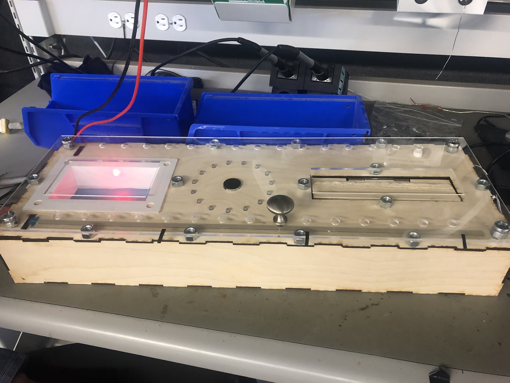
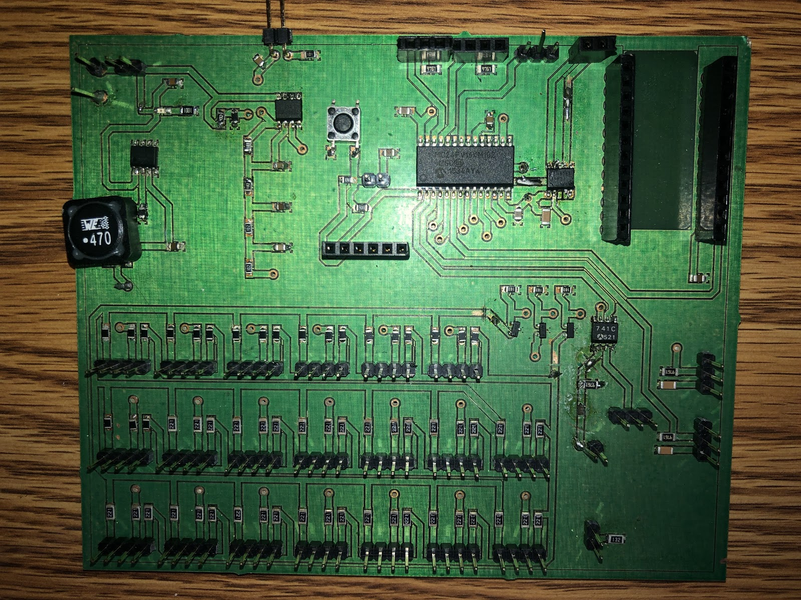

01 THE PROBLEM
Problem Statement
The purpose of this project is to create an automatic mechanical cribbage board for families with parents and children ages 6+ that want to connect classic games with the new generation, while indirectly improving counting and arithmetic skills.

Impact Statement
We hope to improve relationships between family members by providing a game to bridge the generational gap between parents and their children. The children we interviewed considered Cribbage a dull game, but they also revealed that they enjoy using games to connect with family members. By making our version of the game more entertaining, we could provide a better avenue for them to connect to their family, especially those who are already familiar with the game. Another goal is to improve math skills and pattern recognition, which was especially appealing to the parents interviewed. However, this version of the game can slow down game play with the incorporation of technology because it adds extra steps into the process. Some of the rules from the traditional game might be incompatible with our version of the game. An example of this is the muggins rule which allows opposing players to take miscalculated points.
02 PCB FABRICATION
Power Requirements
The entire product is powered by a 12V tabletop power supply. The 12V serves to power the speaker subsystem and the rest of the subsystems are powered from the 5V regulator. Powered by the 5V from the 5V regulator, the PIC24FV16KM102 collects signals from the sensors and wifi adapter and sends signals to control the speaker, servo, motor, and LEDs.

Physical Fabrication
The speaker driver takes a PWM input from the microcontroller. It amplifies this with a LM358 operational amplifier in a negative feedback configuration. Because the input signal has a DC offset and we are powering the operational amplifier with +12V and Ground, we apply a DC voltage to the positive input pin. The output signal is decoupled with a 1µF capacitor before passing through the speaker and a current limiting resistor.
03 SUPER-STRUCTURE

CAD Model Overall
To initiate the game, each player must insert one card into the “crib” making a total of four cards. The “crib” sensor uses an LDR to detect the cards being placed into the “crib”. To condition the sensor, we used an operational amplifier (comparator) to compare the voltage values between the LDR and the adjustable potentiometer. The LDR is connected in series to another resistor to create a Voltage divider. If the voltage is higher on the LDR inverting input of the opamp, the opamp output will be high. If the voltage on the adjustable potentiometer non-inverting input of the opamp is higher, the output of the opamp will be low. This allows the user to adjust the sensitivity of the “crib” sensor no matter what light source is surrounding the board.

CAD Model - Victory
Once the player reaches the last peg hole, it will cause a victory flag to be raised 90 degrees out of the board. The position of the flag’s rotation is controlled by attaching its pole to the shaft of a small dc motor. The direction the motor rotates is then controlled by a motor driver which is an H-Bridge. The motor then stops when it hits either one of the limit switches located at 0 and 90 degrees. The lid that is over the flag is also raised by a small servo with a motor horn.